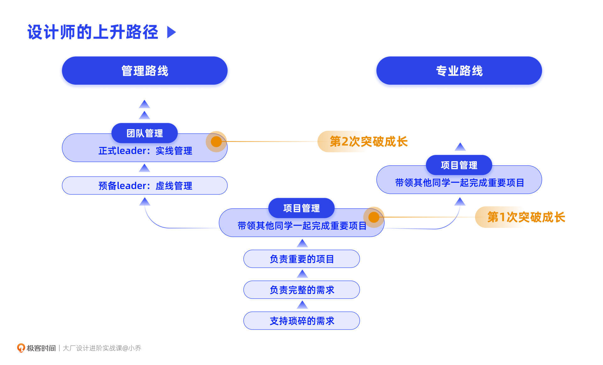
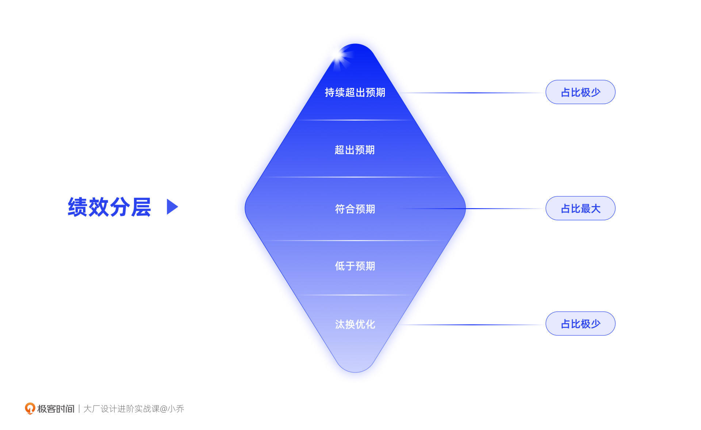
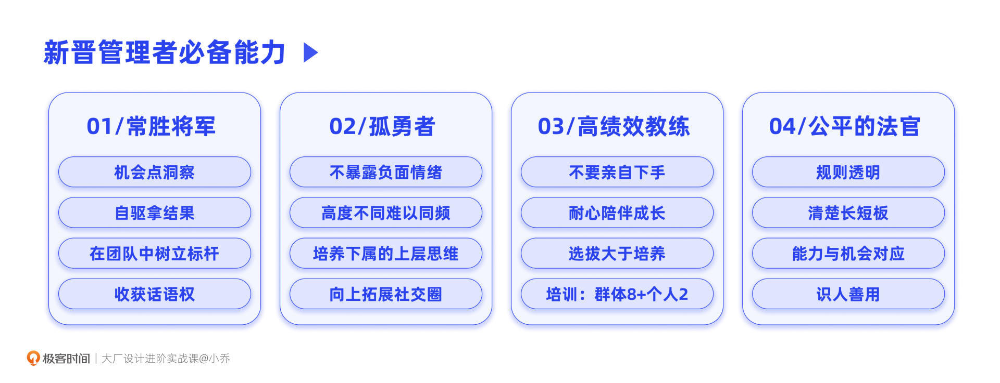
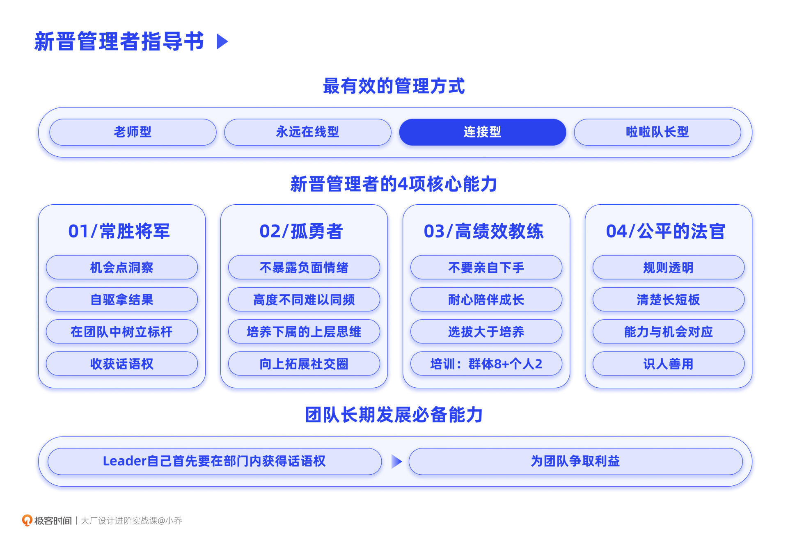

- 00 开篇词 升维思考，是设计师有效成长的第一步.md.html
- 01 业务周期：0-1-10-100-N的发展策略.md.html
- 02 商战模式：如何在商业竞争下突出重围？.md.html
- 03 市场洞察：如何找寻差异化撬动支点？.md.html
- 04 用户洞察：不懂用研的设计师不是好职场人.md.html
- 05 用户画像：是形式主义还是真的有效？.md.html
- 06 用户旅程：挖掘不同用户的核心机会点.md.html
- 07 职场晋升：看懂晋升的“游戏规则”.md.html
- 08 设计价值升级：五层进阶突破成长.md.html
- 09 基础价值 核心三原力：如何将需求转化为设计稿？.md.html
- 10 基础价值 第一性原理：从问题本质解决问题.md.html
- 11 基础价值 设计复盘：只是量化设计结果吗？.md.html
- 12 二级价值 负向网兜：如何全面发现负向问题？.md.html
- 13 二级价值 设计自驱：如何做好项目Owner？.md.html
- 14 二级价值 自驱合作：如何反内卷处理合作关系？.md.html
- 15 三级价值 增长误区：思维惯性陷阱和虚荣数据.md.html
- 16 三级价值 用户增长历程：AARRR是万能的吗？.md.html
- 17 三级价值 产品增长：如何做好产品创新？.md.html
- 18 三级价值 运营增长：如何自驱营销活动和投放？.md.html
- 19 三级价值 品牌增长 抢占心智，赢得人心红利.md.html
- 20 三级价值 增长实操：如何“步步为营”推动落地？.md.html
- 21 四级价值 L型赋能：让T型人才发挥更大价值.md.html
- 22 四级价值 “网状对比”解决共性痛点.md.html
- 23 五级价值 商业画布：设计师可以担任业务方吗？.md.html
- 24 五级价值 共创洞察：如何做好一次完善的workshop？.md.html
- 25 五级价值 领导力觉醒：写给新晋管理者.md.html
- 26 工作选择（上）：2B or 2C设计师？如何规划领域？.md.html
- 27 工作选择（下）：大厂 or 小厂？如何选择赛道？.md.html
- 28 人才地图：认知自我，成为高潜力人才.md.html
- 29 成长历程：如何从设计小白成长为团队负责人？.md.html
- 30 冰山模型：如何成为让面试官欣赏的“面霸”？.md.html
- 31 作品集指导：什么是面试官喜欢的作品集？.md.html
- 用户故事 什么是职场设计师进阶的正确姿势？.md.html
- 结束语 突破自我，成人达己.md.html
- 捐赠
25 五级价值 领导力觉醒：写给新晋管理者
你好，我是小乔。
这节课，是我们五级价值的最后一课，也是本章节的最后一课。恭喜你，即将完成设计价值五级进阶的学习。回想第一次开启这份课程的你，和坚持学习到现在的你，相信在认知、方法和技能上，都已经有了质的飞跃。
我们在五级价值的前两节课中，一起转变了自己看待设计师角色的态度，明白了设计师除了可以自驱发起和设计强相关的项目以外，也可以成为业务负责人。我们一起学习了经典的商业画布，也掌握了决策者们做业务规划时用到的workshop方法。这些方法也同样适用于我们日常做项目，并非一定要成为业务负责人才可以使用。
不过，对于五级价值来说，我们还缺少一个技能点，领导力。领导力是个很大的命题，并不是一节课可以全部讲清楚的，甚至值得写一整套课程。今天这节课，我们就把重点放在如何做好一名新晋管理者上。
设计师的上升路线有哪些？
在职场中向上发展，通常会有两条路线供我们选择：一条是走专业路线，一条是走管理路线。管理路线并不是不懂专业只懂管理，而是既要专业好、又要管理能力强。
起初，大家都是设计执行者，做琐碎的设计需求，接着开始独立支持完整的项目、负责重点项目，再往上就可以带着其他同学一起攻克重点项目。
成长到这里，就会出现我们刚才说的两条路径了：一条是专业路线，持续在攻克重点项目的方向上发展；另一条是管理路线，逐渐成为团队管理者。
我们先来说专业路线。如果一位设计师的设计专业能力极强，对比整个部门来说都出类拔萃，但却不善于管理团队，也对此没有兴趣，那组织会建议往专业路线发展，也就是各企业所说的专家岗。
但走专业路线，通常会停留在某一个中层级别后，就难以再往上晋升了。靠专业能力晋升到高管的人才，是非常少有的。
再来看管理路线。如果一位设计师的设计专业能力整体较强，虽然不一定在某个细分的专业能力上非常突出，但在设计策略、排兵布阵、人际关系等方面较为擅长，组织就会鼓励TA往管理者发展。
这位设计师，通常会先被作为预备leader培养，学习培训课程，开启虚线管理。这个阶段叫作管理考察期，不仅在设计策略和战功上要表现突出，所带领的团队同学也要有可感知的进步。当得到组织的整体认可后，才能成为实线管理者，有完善的汇报线，担负打绩效的重任。
走管理路线的设计师，天花板较高，可以不断突破角色，有更大的上升空间，比如团队leader、设计总监、资深总监、业务负责人，这些都是管理岗的title。

我们对标到阿里的职级来看，P5是承接一些零散的设计需求，P6的要求都是独立完成项目，那么即将晋升的P6+和P7，都需要具备带领年轻设计师共同完成重要项目的能力。所以，可以带领项目，成为项目负责人，这是第一次突破性成长，当这个能力得到证明后，再往上发展才有机会带团队，成为团队负责人，完成第二次突破成长。
什么管理方式最有效？
我们都希望自己运气好，能跟着一位好老板，但怎样的管理方式对团队同学的成长和绩效有最大帮助呢？
咨询公司Gartner曾对多个行业、7300+名员工和管理人员开展过一项研究，发现了如下四种管理风格：
- 老师型：依靠自身的知识和经验辅导下属，以提供建议为主，亲自指导下属。老师型通常在进入管理岗之前，作为个人贡献者工作多年，他们在自己的专业领域拥有丰富的经验；
- 永远在线型：对下属的发展尤为重视，在多个领域、多项技能上，给下属提供持续的指导，是四种类型中最关注提升下属能力的一类，他们将提升下属的能力视为己任；
- 连接型：只在自己的专业领域给下属指导，遇到自己专业领域之外的问题，会找到公司里最适合提供指导的人来帮助下属。相比较其他三类，连接型花更多时间评估下属的技能水平、需求和兴趣；
- 啦啦队长型：采取不干预的方式，给予积极反馈（鼓励、表扬等），让下属自行发挥与发展。他们会展现“支持”的态度，但在发展下属的能力方面，他们并不像其他三类那般积极行动。
看到这4种管理方式后，你认为哪种最能给团队带来成长和高绩效呢？你希望自己的leader是哪一种管理方式呢？
这项研究有三个发现，超出许多人的想象：
- 辅导时间与下属的绩效几乎没有相关性，管理者花36%的时间还是9%的时间，并不影响下属的工作表现；
- “永远在线型”辅导风格弊大于利，团队同学的表现，反而不如其他类型管理者的下属；
- 这4种管理方式中，效果最好的是“连接型”，这类管理者的下属成为绩优者的可能性，是其他类型的3倍。
以我自己为例，我的性格非常操心，所以我很容易发展为“老师型”或“永远在线型”leader。我十分珍惜人才，会给我团队同学做各种各样的培训，巴不得他们每个人都迅速成长，形成充足的竞争力，即使哪一天离开我这个港湾，他们也都可以所向披靡。这样的好处是，我会受到团队同学的喜爱，在绩效360环评时，我获得的好评也会超越其他leader。
但这样的缺点是，我必须确保自己各方面的知识和能力都不断突破，否则我自己的能力就会成为团队的天花板，且让团队同学过度依赖我。所以当我知道“连接型”是对大家成长最有效的方式后，就开始主动转变管理方式了。我只在自己非常擅长的领域指导大家，其他方面都会对接相关职能的负责人，或者鼓励大家自己去找人、找资源进行对接。
所以如果你是一位新晋管理者或者预备leader，就要避免因为长期带其他同学做项目，或者长期作为其他同学的mentor，导致习惯性地成为“老师型”或“永远在线型”的管理者。激发下属自驱解决问题，才是事半功倍的。
新晋管理者需要哪些核心能力？
当我们从个人贡献者，成长为新晋管理者后，还需要调整自己的能力结构和心态。有许多同学被组织作为预备leader培养，但因为角色转换不过来，而失去了成为leader的机会。从我自己和其他管理者的经验来看，有4项能力对于新晋管理者来说极为重要。
运用我们曾经在用户画像一课中讲过的，通过赋予形象降低理解门槛的思路，为了帮助你更好地记忆，我同样为这4种能力赋予了人物形象。
能力1：常胜将军
首先，不管你是一位在团队中被选拔上来的leader，还是一位空降的leader，让周围同学和其他平行leader服气，是第一件要做的事情。
在我目前所在的公司和部门，即便你曾经带领70人、100人的团队，刚落地时都是没有实线管理架构的。组织会给半年时间，考察是否能够融入团队。所谓的融入团队，就是团队同学们愿意跟着你干，愿意把你当作leader，你的peers（其他和你一个级别的leader）也都对你的能力表示认可。
所以，首先要具备的能力就是找寻机会点并推动项目落地，并且以设计自驱项目为佳。你可以和各职能的同学交流、查看数据、做用户调研等等。在找到机会点后，和各方沟通，观察落地机会，挑选团队内可以助你一臂之力的同学，一起完成项目，立下大家都认可的战功。这些能力，全部都是我们前面课程的内容。
你会发现，这其实依然是项目负责人做的事情，并不是典型的团队管理者做的事情。但不管你是新晋管理者，还是资深的老leader，都要具备随时下来打胜仗的能力。
打胜仗的能力，可以帮助团队树立标准和标杆，也可以帮助你获得话语权。你是榜样，那大家自然就愿意跟着你，觉得跟着你有肉吃。
能力2：孤勇者
在成为管理者之前，你一定要做好心理准备：管理者都是孤独的。这个孤独是指你和团队下属之间的孤独，并不是指你自己的社交圈。
这是许多新晋管理者都没有做好的一点，所以我将它排在第二位。管理者的孤独主要体现在两方面。
孤独的第一方面是不能暴露负面情绪。不要因为和团队同学们关系好，就知无不言，许多事情管理者都是不能和下属交流的，负面情绪也是其中一项。你可以喜形于色，但不能将负面情绪传达给团队中的任何一个人，即便是有高度信任关系的下属。
为什么这么说呢？因为团队同学们的皮实程度和耐受程度往往没有你高，你的负面情绪会严重影响他们的信心。大家会疑惑：连我老板这么优秀的人都搞不定，那我是不是危机更大了？不如三十六计走为上策吧。我自己也曾经因为这项能力不足，痛失喜爱的下属，躲在公司的洗手间大哭。
孤独的第二方面是高度不同，难以同频。因为你和团队同学们的视角不同，别人时常无法理解你，如果可以理解，那TA其实也已经具备成为管理者的能力了。大家的视角不同，只有你能看到完整的豹子，别人看不到你的高度，所以别人看到的是斑点，是尾巴，是腿。想减缓这种情况，就要培养下属的“上层思维”，让他们尽量往你的视角上站一站、看一看。
我目前所在的企业，曾经做过面向全公司管理者的培训。每次在培训的过程中，都会激发彼此的故事和困难，让大家产生许多共鸣。有一些内心尚且不够强大的新晋管理者，就会在培训过程中痛哭。于是一个管理者培训课，变成了互相安抚情绪的心理课程。
所以“高处不胜寒”，是一个相对概念，未必有多么高，也许你只是一个脚部管理者，不是腰部管理者，更不是高管。但每往上一个高度，都会更孤独一些，这也是成长必须克服的障碍。
也许有同学会问，既然管理者这么孤独，为什么我们还要成为管理者呢？其实，孤独仅限于你们是上下级关系的时候，在工作之余，依然是可以一起逛街、旅游、看展的好朋友。并且，这并不妨碍你本身的社交圈，因为你的角色一直在往上走，朋友圈子也会更向上一些，都是各个公司的总监、高管、投资人，和他们交往也很快乐。
能力3：高绩效教练
把团队同学的能力拔高，训练他们获得高绩效，无论你是新晋管理者还是老leader，这项能力都十分重要，决定了团队的人才密度和业务能力。
当我们打过胜仗，立下标杆之后，要尽量往后退，让团队同学们往前冲，这样才是对大家负责的做法。不管下属项目做得有多么令你失望，都不要直接下手干，而是耐心指导TA完成得更好一些。即便你可以用5分钟改好他画一个星期才能改好的图，都不要亲自下手。
对下属来说，你亲自下手会让TA逐渐失去信心，也会逐渐养成让你兜底的坏习惯，得不到成长。对你来说，要从“放着我来”，转变为“授之以渔”，才是从个人贡献者转变为团队管理者。
刘润老师曾经分享过他自己的故事。他负责写一份活动报告，写了长长的邮件寄给老板。而他的老板只做了一件事情，就是在报告上密密麻麻全部标注了要修改的地方。刘润只好重新改了一遍，心想这些你改起来不是更快吗？但老板依然坚持不自己改，还是不断地进行修改批注。他们就这样从下班的时候开始改，一直改到第二天早上7点，老板终于说，可以了。当刘润老师成为资深的管理者后，他非常感激这位领导，因为他的领导愿意花更多的时间，陪伴刘润一起成长。
但我们作为管理者，需要对每位下属都如此耐心吗？
其实在管理方法中，有句话叫作“选拔大于培养”。首先我们需要选拔潜力高，管理成本低的同学加入我们的团队，再对这些同学进行培养，这个部分我们会在下一章冰山模型中具体讲解。对于培养潜力低、业务能力差的同学，需要进行及时汰换，才更有利于团队健康发展。
通常最有效的培训方式是：80%群体辅导+20%个人辅导。我们这套课程，最初就是我写给自己团队的内部培训资料。对于我个人并不够擅长的领域，我也买了许多资料供大家学习，这就是80%群体辅导的部分；而对于团队同学的个人1:1辅导也是十分必要的，有针对性地梳理每位同学的长短板和成长计划，会让每位同学有清晰的成长目标，这个部分就是20%的个人辅导，我们也会在能力平衡轮一课中讲解。
乔布斯曾经说过：“卓越的人才是自我管理的，他们不需要被管理。他们一旦知道要做什么，就能想办法去完成。”
我认同这句话，其实大企业的高管们通常对腰部管理者也不太做管理，只要目标拉齐，其他都放任大家各自发展，有规划或结果时，腰部管理者们会自己去找高管们汇报。但是在我们成为卓越人才之前，如果能遇到一位合格的leader在自己的成长道路上有所点拨，这是一件多么幸运和事半功倍的事情。
能力4: 公平的法官
首先，世间并没有绝对的公平，但我们可以运用统一的“游戏规则”，让所有行为有迹可循，让该得到嘉奖的人有所收获。
所以我们要尽量让团队同学们明白，怎样的同学可以拿到高绩效，怎样的同学可以得到晋升。这就要求你本身对于打绩效和晋升的标准非常清晰，而不是一问三不知。
我们在之前的课程中讲过高绩效和晋升的规则。具体的绩效分配比例，通常企业是不允许和下属交流的，但底层逻辑可以透明地告知团队同学，让大家明白团队内表现突出的同学可以得到高绩效，表现持续不好的同学会被汰换。

新晋管理者常常会遇到一些问题，比如对职场规则不太明白的同学，会向你提出质疑：“为什么他可以负责这个项目，我不能负责呢？”面对这样的质疑，你会怎么回答呢？
其实这个问题，反应了这位同学对自己能力的不自知，或者TA能力是匹配的，但你在分配项目上缺乏合理性。不管是哪个原因，都需要管理者不断提升自我。
好的项目，本质是一个个机会，所以人人都想做好的项目。但并不是让人人都得到一样好的项目，才叫作公平。在职场规则里，有多大的能力，就承接多大的机会。
我近两年了解了一些珠宝投资的知识，我们以翡翠来举例。一块上好的翡翠料子，我们假设它价值20万。如果把这料子交给张炳光、加隆等大师雕刻，充分运用料子的特点来雕琢，把有色彩的部分巧雕成莲花，把不好的部分剔除，这样的成品可以卖出几百万的价格。但如果给一位技法欠佳的师傅来雕刻，价值20万的料子，最后成品也许就只值几万了。
这在职场中也是同理，如果一个好项目交给能力不足的同学承接，也许还不如放着它不要推进。这也就避免了大家常说的，“打烂了一手好牌”。
所以我们作为管理者，首先要让大家清楚自己的长短板和提升方向，明白只有相应的能力才能匹配相应的机会。再来，识人善用，对于新晋管理者来说是必须具备的能力，把好的机会给能力匹配或值得培养的人才，这才是公平。

今日小结
今天，我们学习了设计师的两种上升路径和有效的管理方式，并一起探讨了新晋管理者需要具备的4项能力。
首先，我们必须是可以打胜仗的将领，以此树立标杆和威信，因为只有实打实的能力才是被他人信服的。第二，我们也需要成为孤勇者，收敛自己的负面情绪，也尽量培养下属获得“上层思维”。第三，我们需要成为高绩效教练，选拔优秀的人才，耐心地授之以渔，指导每位同学的成长。最后，我们必须是公平的法官，将可以传达给团队同学的规则公开透明，让每位同学清晰自己的长短板和发展方向，识人善用。
随着新晋管理者不断成长，我们也要懂得为自己团队争取利益，不然大家会跟着你喝西北风，团队是带不长久的。
想要为自己的团队争取利益，管理者自己就需要在团队和部门中具备话语权，而想要获得话语权，就只能靠能力。比如你已经是设计团队的一号位了，你的上级是业务负责人和战略负责人，他们不懂设计，他们只认数据结果，他们起初以为设计师只是画图的工具人。那你作为设计负责人，就要提出许多合理的业务判断，影响战略方向，用他们最认可的数据语言来沟通。
具备话语权，我们才有资格要求合作模式，才不会让设计团队过于被动。毕竟大家的共同目标都是如何让业务更好，如果你可以证明设计师的前置介入会更好，那机会自然会向你伸出橄榄枝。
不要觉得这不可能，这就是我的真实经历，既然我可以达成，相信你一定可以做得更好！

如果在你的职业生涯里，没有遇到过一位好leader，这并不是什么大惊小怪的事情，因为大部分同学也是如此。你可以尝试用我们之前讲过的吸引“贵人”的方式再做尝试。
如果你已经成为了一名leader，希望你可以将自己曾经对管理者的期望，在你自己的团队中实现，为其他同学的职业生涯，点亮一盏明灯。
互动时刻
回顾你过往的职业生涯，是否有让你印象深刻的leader呢？TA是怎样指导和培养你成长的呢？如果你是一位团队管理者，你会如何带团队呢？
欢迎把你的经历和思考在留言区分享出来，与我和其他同学一起探讨。我们建了一个读者交流群，欢迎你的加入！如果你觉得有所收获，也欢迎把文章分享给你的朋友一起学习。我们下节课见。
© 2019 - 2023 Liangliang Lee. Powered by gin and hexo-theme-book.